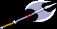

| 메인 매뉴 | | | 무기류 | | | 장비류 | | | 도구류 | | | 보석류&기타 | | | 상점 정보 |
| 전설의 검 풀기 | | | LB오일 정보 | | | 상자 정보 | | | 아이템 콜렉션 |
| 도끼/둔기류 | | | 완드류 | | | 스태프류 |
| ※ 타격 위치와 타이밍에 따라 데미지에 가감이 있으며 기본무기 일수록 그 편차가 큰 편입니다. ※ 이미 가지고 있는 무기를 습득 할 경우 2000xp로 환산 됩니다. ※ 같은 클래스라면 무기 종류에 상관없이 공격 리치가 같습니다. 예를 들면 파이터가 노멀소드를 들던지 투핸디드 소드를 들던지 같은 공격 리치를 보여줍니다. ( '뉴타입'님께서 제보해주셨습니다. 감사합니다.) |
| Short Sword (SS) - 숏 소드 (판매가격:170sp) 엘프의 기본 무기입니다. 숏 소드 lv1은 게임상에서 등장하지 않습니다. 파이터가 착용시 이도류로 전환됩니다. 평균 데미지 (단위:픽셀)
입수 방법 - 스테이지 5-A(절망의 숲)의 상단 숨겨진 방의 우측 상자를 파이터가 개봉 (lv2). - 스테이지 8-A(미로의 숲)의 세번째 지역의 상단 상자를 드워프가 개봉 (lv2). - 아울베어(Owlbear) 격파시 확률에 따라 드랍 (lv2). |
| Bastard Sword (BS) - 바스타드 소드 (구입가격: 1500sp / 판매가격: 300sp) 데미지가 노멀 소드 lv4보다 약간 높습니다. 엘프의 경우 숏소드와 데미지 차이가 꽤 있어서 쓸만합니다. 사실 D&D룰상의 바스타드 소드는 꽤 크기 때문에 기본적으로 양손무기이며 힘이 쎄거나 특별히 훈련을 받지 않으면 한손으로 쓰기 힘들어서 SOM의 시프나 엘프가 한손으로 쓰기엔 무리가 있는 무기 입니다. 평균 데미지 (단위:픽셀)
입수 방법 - 라파엘 동굴의 숨겨진 보물실(레드 드래곤)의 가장 우측 중간의 상자를 개봉(전 클래스 공통). - 스테이지 10-1(게이트) 안쪽지역 중앙의 숨겨진 방(오거가 있는 곳)의 가장 하단 상자를 파이터, 시프, 엘프가 개봉. - 놈(Gnome) 마을의 상점에서 구입. - 시프로 스테이지 9-C(지하수로), 스테이지 10-2(오버츄어)의 텔아린에게 픽 포켓 시도시 확률에 따라 드랍. |
| Two-Handed Sword (THS) - 투 핸디드 소드 (구입가격: 6000sp / 판매가격: 1200sp) 양손무기이며 오로지 파이터만이 습득이 가능하기 때문에 사실상 파이터 전용이라 할 수 있습니다. 한방의 데미지가 강력한 대신, 방패를 들 수 없어서 가드가 불가능하고 일반 A공격이 느려지는 단점이 있습니다. (자세한 내용은 파이터 기본 조작편을 참조). 평균 데미지 (단위:픽셀) 28 입수 방법 - 스테이지 10-3(투기장) 전의 두번째 숨겨진 방의 상자를 파이터가 개봉. - 놈(Gnome) 마을의 상점에서 구입. - 시프로 스테이지 9-C(지하수로)의 텔엘레논에게 픽 포켓 시도시 확률에 따라 드랍. |
| Cursed Sword 1 (CS1) - 저주받은 검 1 (판매가격: 1sp) '전설의 검(Sword of Legend)'이 저주가 풀리기 전의 모습입니다. 데미지는 전설의 검과 같지만 이 검을 휘두를 때 마다 높은 확률로 데미지를 입습니다. 54번을 휘두르면 저주가 풀리며 전설의 검으로 변합니다. '레비테이션 부츠(Boots of Levitation)'를 이용해 공중에 뜬 후 휘두르면 데미지를 입지 않지만 이 방식으로 저주를 풀 순 없습니다 - 저주받은 검1 저주 푸는 법 보기(Click) - 평균 데미지 (단위:픽셀)
입수 방법 - 라파엘의 동굴 30층의 상자를 개봉(전 클래스 공통). |
| Cursed Sword 2 (CS2) - 저주받은 검 2 (판매가격: 1sp) '홀리 어벤져(Holy Avenger)'가 저주가 풀리기 전의 모습입니다. 데미지는 홀리 어벤져보다 훨씬 높지만 이 검을 휘두를 때 마다 높은 확률로 마비가 되는데 그로 인한 데미지는 없지만 건틀릿(Gauntlet of Power)이나 파이어 레지스트 링(Ring of Resist Fire)같은 데미지를 입으면 깨지는 아이템은 높은 확률로 깨집니다. '레비테이션 부츠'를 이용해 공중에 뜬 후 휘두르면 마비되지 않습니다. 클레릭이 8번 줏었다 놓으면 저주가 풀리며 홀리 어벤져로 변합니다. 평균 데미지 (단위:픽셀)
입수 방법 - 스테이지 5-A(절망의 숲)의 우측 숨겨진 방(구울이 있는 곳)의 우측 중앙 상자를 개봉(전 클래스 공통). |
| Sword of Flame (SofF) - 불꽃의 검 (판매가격: 500sp) 마법적인 불의 속성을 담은 일명 '속성검'중 하나로 휘두를 때마다 불꽃이 입니다. 따라서 가고일에게 데미지를 줄 수 있으며 프로스트 샐러맨더에게 기본 데미지보다 더욱 높은 데미지를 줍니다. 하지만 헬하운드에게는 데미지가 절반으로 줄어듭니다. 특이하게도 불의 속성을 지니고 있음에도 불구하고 플레임 샐러맨더에게 타격이 가능합니다. 땅에 서 있는 적들은 이 무기에 맞으면 불타오르며 쓰러지는 특성 때문 연속해서 공격하기가 불가능 합니다. 에저호든에게 동료가 먹혔을 때 에저호든을 때리면 동료가 데미지를 입지않고 구출 해 낼 수 있습니다. 평균 데미지 (단위:픽셀) - 3대 속성검중에 가장 데미지가 낮습니다.
입수 방법 - 스테이지 5-A(절망의 숲)의 우측 중단 숨겨진 방의 가장 마지막에 있는 상단 상자를 파이터,시프,드워프,엘프가 개봉. - 스테이지 9-B(잊혀진 세계)의 첫번째 상자를 파이터, 시프, 드워프, 엘프가 개봉. |
| Sword of Frost (SofF) - 서리의 검 (판매가격: 500sp) 마법적인 냉기의 속성을 담은 일명 '속성검'중 하나로 휘두를 때마다 차가운 서리가 입니다. 따라서 가고일에게 데미지를 줄 수 있으며 속성검 중 유일하게 적에게 연속공격이 가능합니다. (그러나 다른 무기만큼 연속공격이 들어가진 않으며 드워프의 A공격또한 1히트만 합니다 - 플레임 샐러맨더는 제외.) 그런데 특이하게도 반대 속성의 플레임 샐러맨더에게 공격을 하면 오히려 데미지가 감소합니다. 에저호든에게 동료가 먹혔을 때 에저호든을 때리면 동료가 데미지를 입지않고 구출 해 낼 수 있습니다. 평균 데미지 (단위:픽셀)
입수 방법 - 스테이지 9-A(화염의 대지)의 첫번째 상자를 파이터, 시프, 드워프, 엘프가 개봉. |
| Storm Blade (SB) - 폭풍의 검 (판매가격: 500sp) 마법적인 번개의 속성을 담은 일명 '속성검'중 하나로 휘두를 때마다 전기의 폭풍이 입니다. 따라서 가고일에게 데미지를 줄 수 있으나 땅에 서 있는 적들은 이 무기에 맞으면 감전되며 쓰러지는 특성 때문에 연속해서 공격하기가 불가능 합니다. 대신 공격이 적에게 맞았을 때 생기는 딜레이 현상이 거의 없습니다. 플레임 샐러맨더에게는 서리의 검(Sword of Frost)보다 더 좋은 효과를 보여줄 수 있습니다. 에저호든에게 동료가 먹혔을 때 에저호든을 때리면 동료가 데미지를 입지않고 구출 해 낼 수 있습니다. 평균 데미지 (단위:픽셀)
입수 방법 - 스테이지 5-B(절망의 숲)의 첫번째 숨겨진 방의 첫번째 상단 상자를 파이터, 시프, 드워프, 엘프가 개봉. - 라파엘 동굴 70층의 상자를 파이터, 시프, 드워프, 엘프가 개봉. - 스테이지 10-3(투기장) 이전의 두번째 숨겨진 방의 상자를 시프, 엘프가 개봉. - 시프로 키메라에게 픽 포켓 시도시 확률에 따라 드랍. |
| Dragon Slayer (DS) - 드래곤 슬레이어 (판매가격: 1600sp) D&D세계에서 드래곤 슬레이어는 드래곤을 죽일 수 있는 무기나 드래곤을 죽인 사람을 칭합니다. 여기 SOM에서도 마찬가지이며 레드 드래곤과 싸우다 보면 나오는 드래곤의 뿔(Horn of Dragon)을 레드 드래곤 처치 후에 나오는 상점주인에게 가져다 주면 드래곤 슬레이어(무기)로 교환 해 줍니다. 드래곤류의 적에게 좀 더 높은 데미지를 줄 수 있으나 전설의 검에 비하면 약하고 또 시기상 이후로 나오는 드래곤류의 적이 거의 없는데다가 1인 진행시 이 검을 얻으려면 디스플레이서 클록(Displacer Cloak)을 버려야 되기 때문에 시기상 효율성이 좀 떨어진다 할 수 있습니다. 바닥에 놓여 있을 땐 검신이 흰색을 띄고 있지만 들고 있을 땐 노란색을 띕니다. 평균 데미지 (단위:픽셀)
입수 방법 - 레드 드래곤이 떨구는 드래곤의 뿔을 파이터, 시프, 드워프, 엘프가 입수 후 그 후의 상점주인에게 가져가서 교환. |
| Holy Avenger (HA) - 홀리 어벤져 (판매가격: 1600sp) 직역하면 '성스러운 복수자' 정도가 되며 '저주받은 검2'의 저주를 풀었을 때의 모습입니다. 이름 답게 스켈레톤과 구울을 한방에 처리 할 수 있으며 나머지에게는 노멀 소드 lv4보다 약간 낮은 데미지를 보여줍니다(데미지 자체는 저주를 풀기 전 보다 오히려 떨어집니다.) 그리고 다른 무기와는 달리 스트라이킹의 효과가 절반만 적용 됩니다(대략 50%->25%). 평균 데미지 (단위:픽셀)
입수 방법 - '저주받은 검 2'를 클레릭이 8번 집었다 놓으면 변환. |
| Sword of Legend (SofL) - 전설의 검 '저주받은 검1'의 저주를 풀었을 때의 모습입니다. 게임상에서 가장 데미지가 강력한 무기이며 마법 속성은 없지만 가고일에게 데미지를 줄 수 있습니다. 속성이 없기 때문에 에저호든에게 동료가 흡수됐을 때 공격을 하면 고스란히 데미지를 입으니 주의 해야 합니다. 게임상에서 스코어 랭킹 1위 플레이어의 이름이 붙어서 표현되기도 합니다(1위가 클레릭이든 매직유저든). - 저주받은 검1 저주 푸는 법 보기(Click) - 평균 데미지 (단위:픽셀)
입수 방법 - '저주받은 검 1'를 56회 휘두르면 변환. |
| Hand Axe (HA) - 핸드 액스 (판매가격: lv1 160sp / lv2 170sp) 드워프의 기본 무기입니다. 데미지가 노멀소드와 같습니다. 사실 크기로 봐서 여기에 나오는 핸드 액스는 '배틀 액스'나 '워 액스'에 가깝습니다. TOD의 크기 정도가 핸드액스와 비슷합니다. 평균 데미지 (단위:픽셀)
입수 방법 - 스테이지 2(트린턴 마을)의 숨겨진 방의 맨 아래 상자를 파이터가 개봉 (lv1). - 스테이지 5-B(절망의 숲)의 맨 위쪽 숨겨진 방의 우측 상자를 시프가 개봉 (lv2). - 스테이지 8-A(미로의 숲)의 세번째 지역 위쪽의 상자를 파이터가 개봉 (lv2). |
| Battle Axe (BA) - 배틀 액스  (판매가격: 1200sp) 양손 도끼이며 파이터와 드워프만이 착용 가능합니다 (드워프 전용이라는 인식이 있지만 파이터도 쓸 수 있습니다.) 데미지가 그다지 높은 것도 아니고 양손 무기라서 방패를 사용 할 수 없으며 일반 A공격의 딜레이가 제법 크기 때문에 쓸만한 가치는 별로 없다고 할 수 있습니다. 말하자면 '구색맞추기'의 성격이 강한 무기. 룰을 따르자면 원래의 배틀액스는 날이 한면만 있고 한손무기이며 여기의 배틀액스는 '그레이트 액스'에 가깝습니다. 평균 데미지 (단위:픽셀)
입수 방법 - 스테이지 10-1(게이트) 안쪽 지역 중앙의 숨겨진 방의 맨 아래 상자를 드워프가 개봉. - 스테이지 10-3(투기장) 이전의 두번째 숨겨진 방의 상자를 드워프가 개봉. - 시프로 스테이지 5 이후 등장하는 액스-놀(Axe-Gnoll)에게 픽 포켓 시도시 낮은 확률로 드랍. |
| Mace (M) - 메이스 (판매가격: lv1 160sp / lv2 170sp) 클레릭의 기본 무기로 데미지는 노멀소드와 같습니다. 평균 데미지 (단위:픽셀)
입수 방법 - 스테이지 2(트린턴 마을)의 숨겨진 방의 맨 아래 상자를 시프가 개봉 (lv1). - 스테이지 2(트린턴 마을)의 숨겨진 방의 맨 위 상자를 파이터, 드워프가 개봉 (lv1). - 스테이지 5-A(절망의 숲)의 가장 위 숨겨진 방의 우측 상자를 드워프가 개봉 (lv2). - 스테이지 8-A(미로의 숲)의 두번째 지역의 상자를 파이터(lv1), 드워프(lv2)가 개봉. - 스테이지 8-A(미로의 숲)의 세번째 지역의 상단 상자를 시프, 엘프가 개봉 (lv2). |
| War Hammer (WH) - 워 해머 (구매가격: 2500sp / 판매가격: 500sp) 날이 없어서 클레릭도 착용 가능한 무기로 공격 성공시 뚝뚝 끊긴다는 느낌이 들만큼 딜레이가 큽니다. 어느정도냐면 드워프의 대공기 같은 경우 다 맞기도 전에 적이 떨어질 정도이며 엘프의 대공 서머솔트킥 같은 경우도 덩달아 딜레이가 커질 정도입니다. 적을 스턴상태로 만들 가능성이 크지만 다수의 적을 상대시 중첩해서 맞지 않는 경우가 많으며 가드 후 날아오는 카운터에 속절없이 당할 수 도 있기 때문에 효율이 많이 떨어지는 무기 입니다. 게다가 메이스 lv4보다 데미지가 낮습니다. 헤이스트를 시전한 텔아린에게 다운공격 시도시 거의 무한으로 데미지가 들어가기도 합니다(보스 공략 참조). 평균 데미지 (단위:픽셀)
입수 방법 - 스테이지 10-3(투기장) 이전의 두번째 숨겨진 방의 상자를 클레릭이 개봉. - 놈 마을의 상점에서 구입. |
| Morning Star (MS) - 모닝 스타 (구매가격: 8000sp / 판매가격: 1600sp) 날이 없어서 클레릭도 착용 가능한 무기로 착용시 모든 공격이 뚝뚝 끊긴다는 느낌이 들만큼 딜레이가 큽니다. 그러나 워해머에 비해 다수의 적을 상대할 때 타격의 중첩이 잘 이루어지는 데다가 데미지도 좀 더 높기 때문에 비교적 쓸 만 합니다 (원래의 룰을 따르자면 모닝스타보다 워해머가 더 데미지가 강력한 무기여야 합니다.) 클레릭이 착용시 강공격과 대공기의 모션과 성능이 변화 합니다. 헤이스트를 시전한 텔아린에게 다운공격 시도시 거의 무한으로 데미지가 들어가기도 합니다(보스 공략 참조). 평균 데미지 (단위:픽셀)
입수 방법 - 스테이지 10-1(게이트) 안쪽지역 중앙의 숨겨진 방의 맨 아래 상자를 클레릭이 개봉. - 놈 마을의 상점에서 구입. - 시프로 다크워리어2에게 픽 포켓 시도시 낮은 확률로 드랍. |
| Wand of Cold (WofC) - 콜드 완드 (구매가격: 1200sp / 판매가격: 240sp) 매직 유저 전용 무기로 처음 부터 소지하고 있으며 20회 사용가능 합니다. 휘두르면 지면을 따라 냉기(얼음 덩어리)가 발사되며 맞은 적은 얼어버립니다. 공중에 떠 있는 적은 맞출 수 없습니다. 콜드 로드(Rod of Cold) 착용시 데미지가 증가합니다. 처음에 주어지는 완드를 다 써버리고 놈의 마을에서 구입시 255회 사용가능한 완드가 됩니다. (단, 추가로 나오는 콜드 완드를 절대 줍지 말아야 합니다.) 평균 데미지 (단위:픽셀)
레벨에 따른 사정거리 14레벨 15~19레벨 20~21레벨 한 화면의 거리 입수 방법 - 스테이지 9-A(화염의 대지)의 처음 상자를 매직 유저가 개봉. - 놈 마을의 상점에서 구입. - 몇몇 보스 제압시 낮은 확률로 드랍. ※ 완드를 전부 소비하면 스트라이킹 스태프로 자동 교체 되는데 이렇게 되면 스태프의 데미지가 절반 밖에 안나오는 버그가 있습니다. 이 경우 다른 완드나 스태프로 교체 해주면 원래의 데미지로 돌아옵니다. |
| Wand of Fire Balls(WofF) - 파이어 볼 완드 (구매가격: 1200sp / 판매가격: 240sp) 매직 유저 전용 무기로 처음 부터 소지하고 있으며 20회 사용가능 합니다. 휘두르면 파이어 볼이 일직선으로 발사되어 적을 불태우는데 파이어 볼 주문처럼 폭발이 일어나거나 하진 않습니다. 보통 맞은 적은 바로 쓰러지지만 프로스트 샐러맨더의 경우 추가 공격을 넣어줄 수 있습니다. 파이어 로드(rod of fire) 착용시 데미지가 증가합니다. 파이어 로드 착용시 레드/블랙/그린 드래곤에게 높은 데미지를 줄 수 있는데, 특히 블랙/그린 드래곤이 브레스를 뿜어 낼 때 명중시키면 그 효과는 더욱 큽니다 (한발이 LB오일 하나 이상의 파워.) 처음에 주어지는 완드를 다 써버리고 놈의 마을에서 구입시 255회 사용가능한 완드가 됩니다. (단, 추가로 나오는 파이어 볼 완드를 절대 줍지 말아야 합니다.) 평균 데미지 (단위:픽셀)
레벨에 따른 사정거리 14레벨 15~19레벨 20~21레벨 한 화면의 거리 입수 방법 - 스테이지 5-A(절망의 숲)의 중간 숨겨진 방의(액스놀이 나오는 곳) 가장 마지막 상단 상자를 매직 유저가 개봉. - 스테이지 9-B(잊혀진 세계)의 처음 상자를 매직 유저가 개봉. - 스테이지 10-1(게이트) 안쪽 지역의 오른쪽 숨겨진 방의 상자를 매직 유저가 개봉. - 놈 마을의 상점에서 구입. - 몇몇 보스 제압시 낮은 확률로 드랍. ※ 완드를 전부 소비하면 스트라이킹 스태프로 자동 교체 되는데 이렇게 되면 스태프의 데미지가 절반 밖에 안나오는 버그가 있습니다. 이 경우 다른 완드나 스태프로 교체 해주면 원래의 데미지로 돌아옵니다. |
| Wand of Lightning Bolts (WofB) - 라이트닝 볼트 완드 (구매가격: 1200sp / 판매가격: 240sp) 매직 유저 전용 무기로 20회 사용가능 합니다. 휘두르면 번개 줄기가 발사되어 맞은 적은 전기충격을 받으며 쓰러집니다. 대부분의 적은 맞으면 바로 쓰러지고 샐러맨더나 드래곤계열의 경우는 2~3히트를 하는데 최대 3히트를 하는 특성 때문에 일명 '라크리'를 가장 높은 확률로 성공시킬 수 있는 무기 입니다. 라이트닝 로드(Rod of Lightning) 착용시 데미지가 증가합니다. 놈의 마을에서 구입시 그전까지 라이트닝 완드를 줍지 않았다면 255회 사용가능한 완드가 됩니다. 평균 데미지 (단위:픽셀)
레벨에 따른 사정거리 14레벨 15~19레벨 20~21레벨 한 화면의 거리 입수 방법 - 스테이지 5-A(절망의 숲)의 처음 숨겨진 방의 첫번째 상단 상자를 매직 유저가 개봉. - 놈 마을의 상점에서 구입. - 몇몇 보스 제압시 낮은 확률로 드랍. ※ 완드를 전부 소비하면 스트라이킹 스태프로 자동 교체 되는데 이렇게 되면 스태프의 데미지가 절반 밖에 안나오는 버그가 있습니다. 이 경우 다른 완드나 스태프로 교체 해주면 원래의 데미지로 돌아옵니다. |
| Wand of paralyzation (WofP) - 마비 완드 (구매가격: 800sp / 판매가격: 160sp) 매직 유저 전용 무기로 적을 타격시 보스와 언데드를 제외한 대부분의 적은 높은 확률로 마비가 됩니다. 역시 마찬가지로 20회 사용가능 하며 다른 완드와는 달리 255회 사용가능한 완드를 구입할 수 없습니다. 평균 타격 데미지 (단위:픽셀) 6 입수 방법 - 스테이지 5-B(아인슨 거리)의 처음 숨겨진 방의 안쪽 방의 가장 위쪽 상자를 매직유저가 개봉. - 스테이지 5-A(절망의 숲)의 가장 하단 숨겨진 방의 좌측 상자를 매직 유저가 개봉. - 놈 마을의 상점에서 구입. - 몇몇 보스 제압시 낮은 확률로 드랍. ※ 완드를 전부 소비하면 스트라이킹 스태프로 자동 교체 되는데 이렇게 되면 스태프의 데미지가 절반 밖에 안나오는 버그가 있습니다. 이 경우 다른 완드나 스태프로 교체 해주면 원래의 데미지로 돌아옵니다. |
| Staff of Striking (SofS) - 스트라이킹 스태프 매직 유저의 기본 무기로 스트라이킹의 힘을 담고 있으며 실제로 매직 유저가 착용 가능한 무기중 타격 데미지가 가장 높습니다. 또한 기본 무기중 유일하게 레벨이 없으며 추가로 입수가 불가능 합니다. 평균 타격 데미지 (단위:픽셀) 10 |
| Staff of Snake (SS) - 뱀의 지팡이 (판매가격: 1200sp) 스태프류의 무기임에도 클레릭 전용 무기입니다. 공격이 성공하면 적은 잠깐동안 뱀에 물립니다. 그러나 그것뿐 별다른 효과는 없으며 또한 데미지도 메이스 lv2 수준이기 때문에 쓸 필요가 없는 무기입니다. 보기와는 달리 리치가 늘어나는 것도 아닙니다. 평균 데미지 (단위:픽셀) 12 입수 방법 - 레드 드래곤이 떨구는 드래곤의 뿔을 클레릭이 입수 후 그 후의 상점주인에게 가져가서 교환. - 스테이지 10-3(투기장) 이전의 첫번째 숨겨진 방의 아래쪽 상자를 클레릭이 개봉. - 시프로 키메라에게 픽 포켓 시도시 확률에 따라 드랍. 사담 SOM에서 '3대 쓰레기 무기'라고 볼 수 있는 세가지 무기 - 배틀 액스, 워 해머, 그리고 뱀의 지팡이 |
| Staff of Elemental Power (SofE) - 정령의 지팡이 매직 유저 전용 무기로 Conjure Elemental의 데미지를 25%증가시켜 줍니다. 따라서 2p 매직 유저에게는 소용이 없으며 희소성이 있지만 그만큼의 효율은 없다 할 수 있습니다. 보기와는 달리 타격 데미지가 스트라이킹 스태프와 동급입니다. 평균 타격 데미지 (단위:픽셀) 10 입수 방법 - 라파엘 동굴 70층의 상자를 매직 유저가 개봉. |
| Staff of Magical Power (SofM) - 마력의 지팡이 (판매가격: 1600sp) 매직 유저 전용 무기로 모든 주문의 데미지를 25% 증가 시켜 줍니다. 평균 타격 데미지 (단위:픽셀) 8 입수 방법 - 레드 드래곤이 떨구는 드래곤의 뿔을 매직 유저가 입수 후 그 후의 상점주인에게 가져가서 교환. - 스테이지 10-1(게이트)의 중앙의 방의 맨 아래쪽 상자를 매직 유저가 개봉. |
| Staff of Wizardry (SofW) - 위저드리 스태프 (판매가격: 1800sp) 매직 유저 전용 무기로 모든 주문의 데미지를 50% 증가 시켜 줍니다. 매직 유저에게 있어서 전설의 검과 동급이라 할 수 있는 가장 위력적인 지팡이 입니다. 특정 조건을 만족시 최강의 주문인 '파이널 스트라이크'를 시전 할 수 있습니다 (매직 유저 '고급조작편' 참조.) 평균 데미지 (단위:픽셀) 8 입수 방법 - 스테이지 10-3(투기장) 이전의 두번째 숨겨진 방의 상자를 매직 유저가 개봉. |